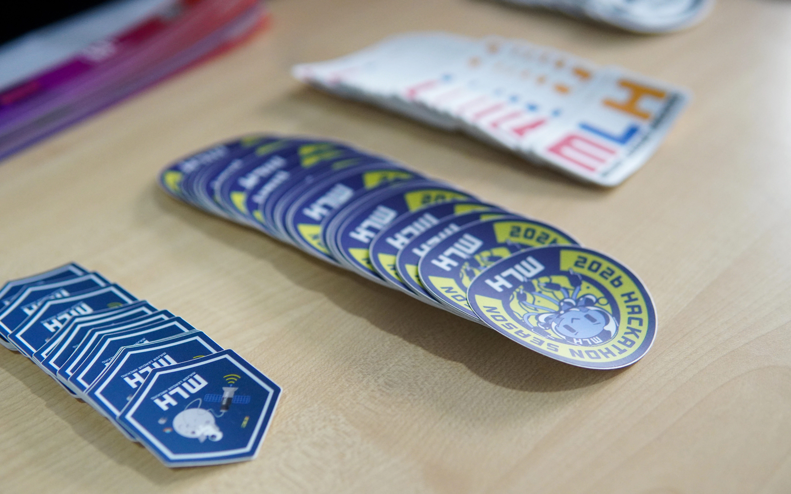

HackUnion Engineering Journal
Technology
1 min read
From Tutorials to Real Systems
A framework for moving from tutorial dependency to independent system thinking as a builder.


Tutorials are useful starting points, but builders level up when they can design trade-offs independently.
Three shifts that matter
1. Outcome before stack
Select tools after defining user outcomes.
2. Interfaces before implementation
Design boundaries first. Build internals second.
3. Feedback before polish
Ship rough but usable flows, then refine based on usage.
Example architecture notes
Client -> API Layer -> Domain Service -> Data Store
\-> Analytics Queue
Practical recommendation
Start one project that solves a problem you personally care about and iterate it weekly for eight weeks.